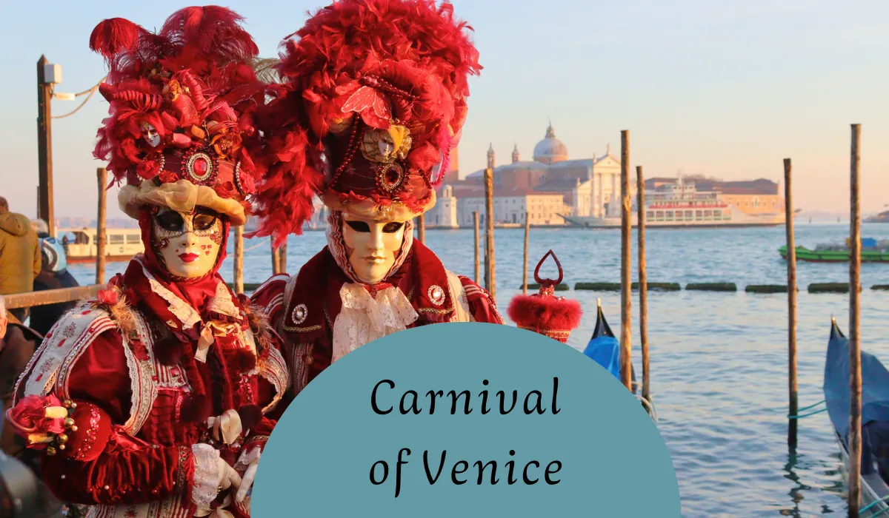
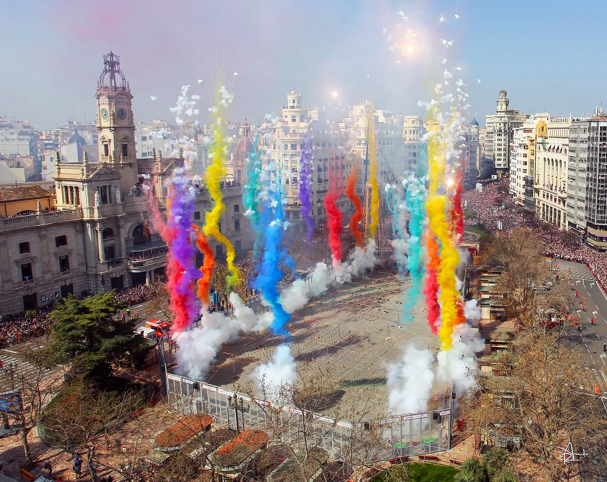
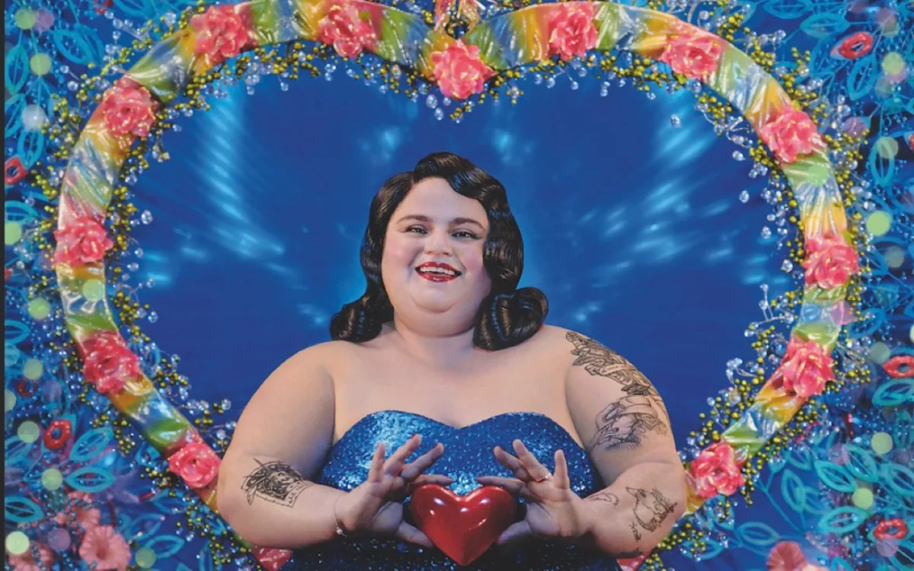

Season of
Takeovers
Whole-city festivals & single-night marquee events
takeovers
single nights
lead needed
premium at peak




| Event / City | 2026 Dates | Scale | Region |
|---|---|---|---|
| Cape Town Minstrel Carnival | 5 Jan | 80–100k spectators, 20,000 performers[52] | Africa |
| Harbin Ice & Snow Festival | Opens 5 Jan | 3 venues, each >1M m²; Ice World 1.2M m² | China |
| Songkran / Maha Songkran | 13–15 Apr (Bangkok 11–15) | Nationwide water-fight takeover | Thailand |
| Albuquerque Balloon Fiesta | 3–11 Oct | 54th ed.; 500+ balloons, mass ascensions[47] | USA |
| Día de Muertos grand parade | Late-Oct/early-Nov Sat | 60+ floats, 5,000 participants, ~6km route | Mexico City |
| Diwali | ~8 Nov (5-day, 6–10 Nov) | Nationwide festival of lights | India |
| Dubai NYE | 31 Dec | 48 displays at 40 sites incl. Burj Khalifa | UAE |
| Event | Book by | Lodging at peak | vs. normal |
|---|---|---|---|
| Venice Carnival | 6–8 months out; 80–95% weekend occupancy | €180–450 mid-range[33] | +40–57% official; blogs cite +200–300%[33] |
| Edinburgh Fringe | 4–6 months; best gone Jan/Feb | Hostels £45–80; budget £150–300; whole-flat lets up to £13k/month | ~300% reported[74] |
| Oktoberfest | Book early; 2nd weekend is peak | ~€316 avg 2nd weekend; €300–500 near grounds[29] | +68% avg; up to +524%[71] |
- Venice day-fee returns & expands to 60 peak days (3 Apr–26 Jul 2026): €5 if booked 4+ days ahead, €10 last-minute, for day visitors over 14. Overnight guests and Carnival visitors (outside that window) are exempt.[53][54]
- Edinburgh 5% visitor levy (capped at 5 nights) starts 24 July 2026 — the UK's first — projected at up to £50M/year; Fringe Society alone expects £6.5M.[58]
- Spain is the backlash epicentre: ranked first of 30 countries for anti-tourism sentiment; protests in 40+ cities; coordinated cross-European demos planned for 2026.[56][55]
- Oktoberfest 2025 closed its grounds after a bomb threat, costing ~€21.2M against typical €1.57bn revenue.[60] Munich adds digital crowd measurement for 2026 after a ~300,000-person crush forced gate closures.[31]
The marquee city-takeovers remain extraordinary, but 2026 is the year the bill arrives — in fees, in queues, and in local goodwill. Book early, go midweek, spend in the neighbourhoods, treat the host city as a home not a backdrop.
-
1Pick the day within the run — highest-leverage choice.
For multi-week events, midweek (Tue–Thu) is markedly calmer than weekends. Opening/closing weekends are the heaviest. Within a day, morning open beats the post-4pm surge; Sunday evenings are quietest as locals prep for Monday.[36]
-
2Crowd tolerance → venue choice.
At Oktoberfest, calmer tents (Tradition, Weinzelt, Marstall) sit opposite the rowdy party tents (Hofbräu, Hacker, Löwenbräu).[37]
-
3Family vs. party is structural.
Some festivals are purpose-built for families with foregrounded children's programming. At Oktoberfest, Augustiner is the family pick against the international-party Hofbräu.[37]
-
4Authenticity correlates with locals.
~85% of Oktoberfest-goers are German, usually for a single day.[37] Walk two streets off the tourist core and eat where residents do. Screen trap vs. genuine: under 12 in the group, local hosts, no rigid script, minimal souvenir push.
-
5Budget rewards planning.
Festival surge lifts lodging 200–300% over off-peak; midweek stays save 15–25%. Early-bird tickets booked 6–10 months out save €50–150. Camping kit (€100–150 one-time) undercuts €150–400/night hotels.